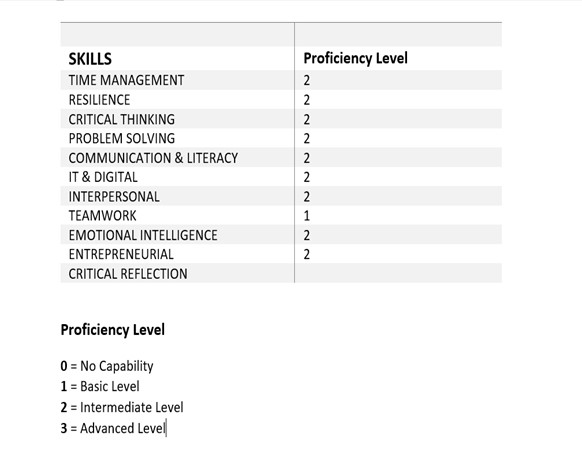

Object-oriented Information System

I started my learning journey with University of Essex by functional programming in Python. The journey is going to be continued by doing another module called Object-Oriented Information System. As the name shows, this time the focus is on the object-oriented aspect of the language.
Learning Outcomes
- Evaluate the concepts and principles of information system
- Design/Modify and document an object-oriented information system
- Develop an object-oriented information system design using Python and SQL
- Evaluate information system solutions to facilitate business decisions
The module starts with Information System concepts, its prevalence and the problems arise from poorly designed or developed systems. It goes on with explaining the components of the systems and their importance. All these support the first learning outcome of the module. To understand the information system completely, the first two units of the module have been equipped with a lecturecast and book chapters. Meanwhile, a collaborative discussion covering an information system failure case study is discussed by students.
In the next units of the module, the focus is on the design and development of the systems. The whole process is done using object-oriented approach which uses objects.To develop a design, UML (Unified Modelling Language) and its different interaction diagrams are used.To understand the core of the design and UML, two practical activities have been offered as assignments. Furthermore, Python has been taught through different computing labs. Database is another subject which got more focus in this module. All these support the second and third learning outcomes of the module.
Action Plan
The key aim for this module is designing and developing an object-oriented information system using Python and SQL. To achieve this goal, an action plan is needed:

Artefacts
The knowledge I have gained in this module are as follows:
Collaborative Discussions
Activities
Coding exercises
Summative Assignments 1
Summative Assignments 2
Now, at the end of the module I can assess myself using a SKILL MATRIX as follows:

In this module, first, I became familiar with design which is the building block of a good coding.Then I learnt how to code using object-oriented approach which I did not know before.